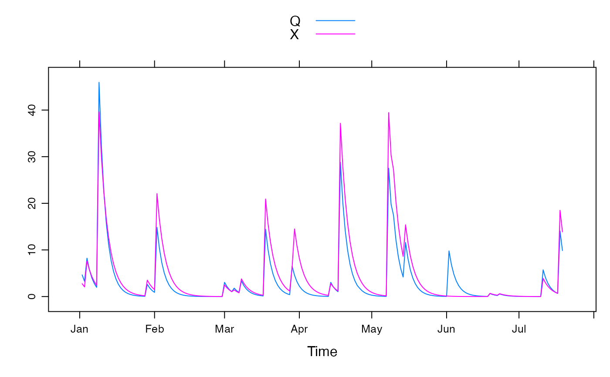

Generalisation of Nash-Sutcliffe Efficiency (R Squared) as a fit statistic for time series.
nseStat( obs, mod, ref = NULL, ..., p = 2, trans = NULL, negatives.ok = FALSE, na.action = na.pass )
| obs | observed data vector. |
|---|---|
| mod | model-predicted data vector corresponding to |
| ref | reference model predictions corresponding to |
| ... | ignored. |
| p | power to apply to absolute residuals ( |
| trans | a function to apply to each data series before calculating the fit statistic. |
| negatives.ok | if |
| na.action | a function to apply to the time series, which is expected to fill in or remove missing values (note, this is optional). |
a single numeric value.
The result is, after transformation of variables,
$$1 - sum(abs(obs-mod)^p) / sum(abs(obs-ref)^p)$$
A perfect fit gives a value of 1 and a fit equivalent to the reference model gives a value of 0. Values less than 0 are worse than the reference model.
If the arguments obs, mod or ref are not plain vectors,
nseStat will attempt to merge them together, so that corresponding
time steps are compared to each other even if the time windows are not
equal.
Felix Andrews felix@nfrac.org
## generate some data -- it is autocorrelated so the use of these ## stats is somewhat problematic! set.seed(0) U <- ts(pmax(0, rgamma(200, shape = 0.1, scale = 20) - 5)) ## simulate error as multiplicative uniform random Ue <- U * runif(200, min = 0.5, max = 1.5) ## and resample 10 percent of time steps ii <- sample(seq_along(U), 20) Ue[ii] <- rev(U[ii]) ## apply recursive filter Q <- filter(U, 0.7, method = "r") X <- filter(Ue, 0.75, method = "r") ## convert to 'zoo' objects with Date index Q <- zoo(Q, as.Date("2000-01-01") + 1:200) X <- zoo(X, time(Q)) xyplot(merge(Q, X), superpose = TRUE)nseStat(Q, X)#> [1] 0.7717829nseStat(Q, X, trans = sqrt)#> [1] 0.7659478#> [1] 0.7479644## use absolute residuals rather than squared residuals nseStat(Q, X, p = 1)#> [1] 0.5564602#> [1] 0.6718251## reference as seasonal averages rather than overall average nseStat(Q, X, ref = ave(Q, months(time(Q))))#> [1] 0.7534322#> [1] 0.0744246